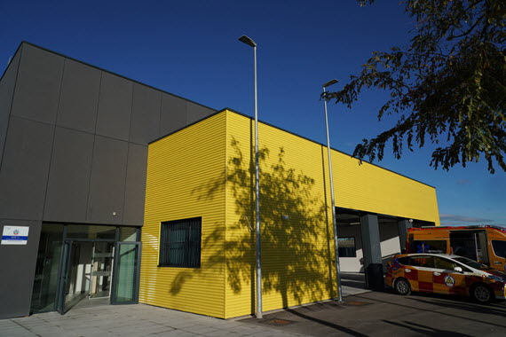

Introducción
El trabajo de bombero es una labor honrada y respetada que pedirá tu máximo esfuerzo durante la jornada laboral debido al gran peligro que puede traer este cargo, serán jornadas exhaustivas en numerosas ocasiones pero serán recompensadas.
Nuestra base
En Pueblo Árbol contamos con una graan base localizada en la calle Manril 23, cuenta con instalaciones a la última tecnológicamente y todo tipo de comodidades para sobrellevar mejor las largas jornadas de trabajo.
Cada bombero compartirá habitación con un compañero, contará con camas individuales en forma de literas, baño privado y una cocina para compartir además de un armario para guardar objetos personales.
Horario de trabajo
8:00-8:30 Calentamiento matutino
8:30-12:00 Jornada en la oficina
12:30-14:30 Asamblea
14:30-15:00 Descanso (Almuerzo)
15:00-16:00 Entrenamiento físico